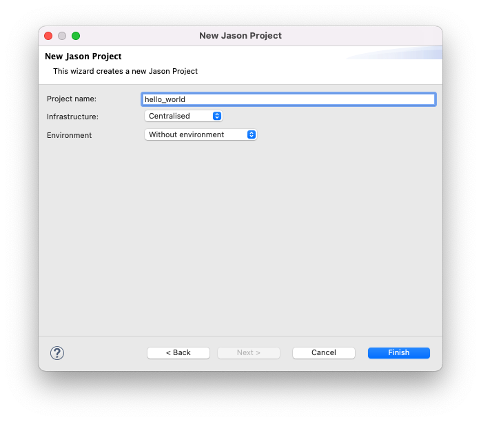
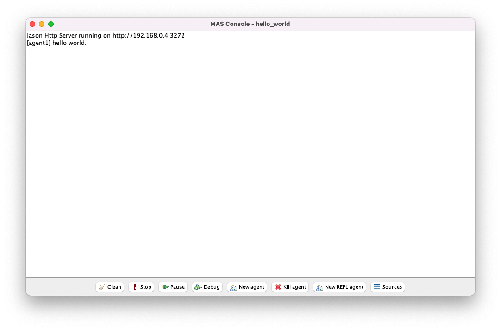

Tutorial 3 - Agents
This tutorial provides a brief introduction to implementing agents in Jason using its extension to the AgentSpeak language.
- Hello, World! program
- From Prolog to Jason
- Plans
- Achievement (sub)goals
- Test (sub)goals
- Belief change actions
- Internal actions
- Conclusion
Hello, World! program
When introducing a new programing language, it is customary to start with a Hello, World! program. This was already included in Tutorial 1a, but we will now go through it in more detail.
Step 1 - Create a new Jason project
Open Eclipse and select File > New > Other > Jason > Jason Project from the Eclipse menu.

Select Next.

Enter hello_world in the Project name field and select Finish.

If you are prompted to open the project in Jason pespective, select Open Pespective.
A new Jason project will be created with a default directory structure and two auto-generated files: src/asl/sample_agent.asl and hello_world.mas2j.
Note: To see the new Jason project you may need to close the Welcome tab.
AgentSpeak file(s)
The file src/asl/sample_agent.asl is an agent program written in Jason's extension to the AgentSpeak language (hence the file extension .asl). All agent programs in a Jason project should be stored in the src/asl directory.
// Agent sample_agent in project hello_world
/* Initial beliefs and rules */
/* Initial goals */
!start.
/* Plans */
+!start : true <- .print("hello world.").
This examples demonstrates the following syntax:
//denotes the start of a line comment/*and*/denote the start and end of a block comment!startis an initial achievement goal+!start : true <- .print("hello world.")is a plan where<-is a separator+!start : trueis the head where:is a separator+!startis the triggering eventtrueis the context
.print("hello world.")is the body
+!startis an achievement goal addition triggering eventtrueis a logical constant that always evaluates to true.print("hello world.")is an internal action that printshello world.to the Jason console.denotes the end of initial beliefs, rules, achievement goals, and plans
When the agent is first run, the initial achievement goal !start is immediately transformed by the Jason interpreter into an external achievement goal addition event, denoted by its triggering event +!start.
According to the definition of external events, the event will include the empty intention.
This event is added to the agent's (initial) event set.
The Jason interpreter cycle is then divided into two phases: the reasoning phase, and the acting phase.
At the start of the reasoning phase the Jason interpreter will apply its event selection function to the event set.
In this instance the event set only contains one event, so +!start will be selected.
If the selected event unifies with the triggering event of a plan then that plan is called a relevant plan.
If the context of a relevant plan is entailed by the agent's current belief base then that plan is called an applicable plan.
The Jason interpreter will find the set of applicable plans and then apply its option selection function to choose one of those plans to add to the intention stack of the selected event.
In this instance there is only one applicable plan +!start : true <- .print("hello world."), so it will be selected, pushed to the (empty) intention stack, and the intention will be added to the agent's intention set.
At the start of the acting phase the Jason interpreter will apply its intention selection function to the intention set.
In this instance there is only one intention, so it will be selected and the first element in the body of the plan at the top of stack will be progressed.
In this instance that element is the internal action .print("hello world."), which will print hello world. to the Jason console.
Since that action was the last element to progress, the intention is now complete.
The event set and intention set are both now empty, so the agent will wait silently for new events.
Note: It is important to emphasise that an agent program only specifies the initial beliefs, rules, goals, and plans of the agent. Jason allows each of these to change over time. As a rule of thumb, an agent program is trivial if beliefs and goals remain fixed over time, but it is reasonably common for rules and plans to remain fixed.
Jason configuration file
The file hello_world.mas2j is a Jason configuration file. There should be exactly one configuration file in a Jason project and it should be stored in the base directory with the same name as the project and file extension .mas2j.
MAS hello_world {
infrastructure: Centralised
agents:
agent1 sample_agent;
aslSourcePath:
"src/asl";
}
This example demonstrates the following syntax:
MAS hello_worldtells Jason this is a Jason configuration file for a Jason project calledhello_world{and}denote the start and end of the Jason configuration optionsinfrastructurespecifies how the Jason project should runCentralisedis the default value and should be left unchanged
agentsspecifies the list of agents where;is a separatoragent1 sample_agentis an agent definitionagent1is the (optional) agent namesample_agentis the (required) agent type as defined bysample_agent.asl
aslSourcePathspecifies the (relative) path of the directory where.aslfiles are stored"src/asl"is the default value and should be left unchanged
If our project in Eclipse is called hello_world then the Jason configuration file should be called hello_world.mas2j and the file should start with MAS hello_world.
The agent definition format then demonstrates that an agent program (.asl file) actually specifies an agent type, so that an agent is an instantiation of an agent type identified by an agent name.
This is analogous to the difference between a class and an object in object-oriented programming.
For example, a second agent agent2 sample_agent could be added to agents, and this agent agent2 would also be instantiated from sample_agent.asl.
If the agent name is omitted from an agent definition then Jason will automatically use the agent type as the agent name. If multiple agents are defined in this way then Jason will automatically append an index to the agent name to distinguish agents of the same type.
Note: It is good practice to always include an explicit agent name in the agent definition.
Step 2 - Run the Jason project
With the hello_world project in focus, select Run Jason Application in the Eclipse toolbar.
Note: There may be two identical buttons in the Eclipse toolbar; ensure that you select the button labelled Run Jason Application rather than the button labelled Run.

This window is the Jason console, which is shared by all agents in the Jason project.
If an agent executes the internal .print("hello world.") action, the parameter text hello world. will be printed to the console and labelled with the agent's name.
For example, the line [agent1] hello world. means that agent agent1 has executed .print("hello world.").
Notice that the Jason project is still running; Jason agents persist until they are explicitly terminated.
Step 3 - Terminate the Jason project
This will terminate the Jason project, including all running agents.
Step 4 - Create a new agent
With the hello_world project highlighed in Eclipse, select File > New > Agent.
Enter my_agent in the Agent name field and select Finish.
A new file my_agent.asl should be created in src/asl and its content should be similar to the existing sample_agent.asl file.
Open hello_world.mas2j. An new agent with agent type my_agent but no agent name should have been added to the list of agent. Call this agent agent2.
MAS hello_world {
infrastructure: Centralised
agents:
agent1 sample_agent;
agent2 my_agent;
aslSourcePath:
"src/asl";
}
With the hello_world project in focus, select Run Jason Application in the Eclipse toolbar.

Note: Although
agent1appears first in the Jason configuration file, Jason does not by default guarantee thatagent1will always get to execute actions beforeagent2, hence why the latter's print messaage may appear before the former's in the Jason console.
Terminate the Jason project.
From Prolog to Jason
Step 5 - Add initial beliefs and rules
Update my_agent.asl as follows:
// Agent my_agent in project hello_world
/* Initial beliefs and rules */
// Initial base beliefs
female(alice).
female(carol).
female(eve).
female(grace).
female(heidi).
female(judy).
female(peggy).
female(wendy).
male(bob).
male(dave).
male(frank).
male(ivan).
male(mike).
male(oscar).
male(rupert).
male(ted).
male(victor).
parent(dave, alice).
parent(dave, bob).
parent(eve, alice).
parent(eve, bob).
parent(ivan, carol).
parent(ivan, dave).
parent(heidi, carol).
parent(heidi, dave).
parent(mike, eve).
parent(mike, frank).
parent(judy, eve).
parent(judy, frank).
parent(peggy, grace).
parent(peggy, ivan).
parent(rupert, grace).
parent(rupert, ivan).
parent(ted, judy).
parent(ted, oscar).
parent(victor, judy).
parent(victor, oscar).
parent(wendy, judy).
parent(wendy, oscar).
age(alice, 91).
age(bob, 92).
age(carol, 61).
age(dave, 62).
age(eve, 63).
age(frank, 64).
age(grace, 31).
age(ivan, 32).
age(heidi, 33).
age(mike, 34).
age(judy, 35).
age(oscar, 36).
age(peggy, 1).
age(rupert, 2).
age(ted, 3).
age(victor, 4).
age(wendy, 5).
// Initial rules
child(X, Y) :- parent(Y, X).
mother(X, Y) :- parent(X, Y) & female(Y).
father(X, Y) :- parent(X, Y) & male(Y).
sibling(X, Y) :- parent(X, Z) & parent(Y, Z) & X \== Y.
adult(X) :- age(X, Y) & Y >= 18.
grandparent(X, Z) :- parent(X, Y) & parent(Y, Z).
cousin(X, Y) :- grandparent(X, Z) & grandparent(Y, Z) & not(sibling(X, Y)) & X \== Y.
immediate_family(X, Y) :- parent(X, Y) | child(X, Y) | sibling(X, Y).
ancestor(X, Z) :- parent(X, Z).
ancestor(X, Z) :- parent(X, Y) & ancestor(Y, Z).
/* Initial goals */
/* Plans */
This Jason code is identical to the the Prolog code from Tutorial 2 except for a few minor syntactic differences:
%(percent) does not denote the start of a comment&(ampersand) rather than,(comma) denotes conjunction|(vertical bar) rather than;(semi-colon) denotes disjunction
What were called facts in Prolog are now called initial base beliefs, and what were called rules are now called initial rules.